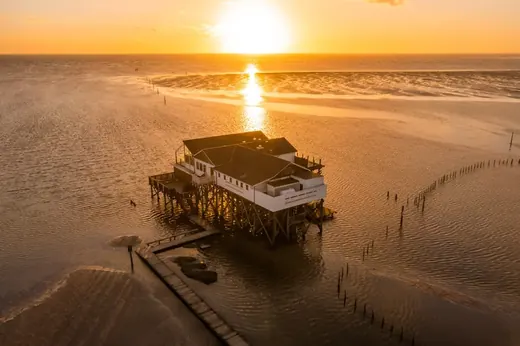

191 Dateien
Eure Fotos
Im Original, sortiert nach Häusern, Reisen, Essen und Crew.
Orte · 6Menschen und Reise · 27Restaurant Hamburg · 10Bistro Crudo · 9Am Meer · 19Garten und Lieferanten · 12Shop und Produkte · 45Reise und Surfen · 7Essen · 32Weitere · 24
Ordner öffnen